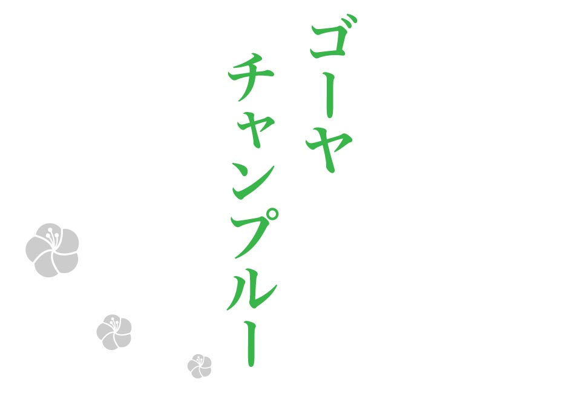
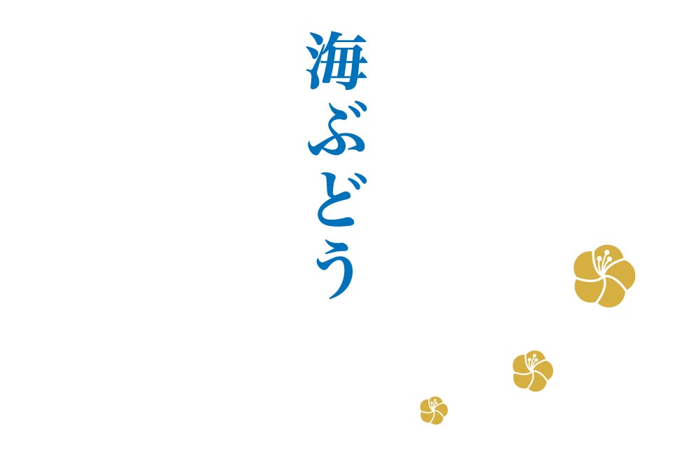
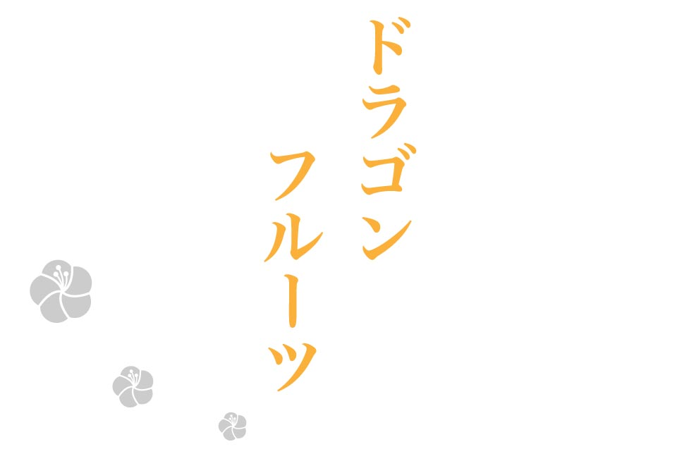

special / 特集

地元の方から、沖縄に来たらぜひ食べて欲しい料理をアンケート。
旅行パンフレットには載っていない地元の人しかまだ知らないお店をこっそり聞き出しちゃいました！

小麦粉100%のそばと、柔らかくなるまで煮込んだ
ソーキ（骨付きあばら肉）を乗せたソーキそばが人気！
沖縄に来た人が必ず食べる絶品料理です。

チャンプルーとは、ウチナーグチ（沖縄方言）で「ごちゃまぜ」という意味。ゴーヤーと島豆腐、野菜、豚肉などを炒めた沖縄を代表する郷土料理。

プチプチとした不思議な食感と、鮮やかな半透明の緑色が
きれいな沖縄を代表する海藻です。

サボテン科の不思議な見た目と形のフルーツ。赤色はさっぱりと甘く、白色は赤色よりもさっぱりとした味。
清涼感たっぷりで、暑い沖縄にぴったり！